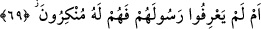
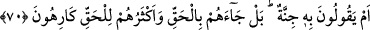

bakarsın ki onlar orada şaşkın ve ümitsiz kalmışlardır!
“Onlar bu sözü (Kur’an’ı) hiç düşünmediler mi?” Bu soru, var olan bir durumu
reddetmek ve çirkin saymak içindir. Yâni, kâfirler yüz çevirme, kibirlenme ve
hezeyanlar savurma gibi yaptıklarını yaptılar da Kur’an’ı düşünmediler mi ki nazmının
i‘câzı, medlûlünün/mânâsının doğruluğu ve gaybden verdiği haberler sâyesinde onun
Rablerinden hak olduğunu bilsinler ve onun hakkında yaptıkları çirkinlikleri bir tarafa
bıraksınlar.
“
”, anlamak için kalbi hazır kılmak demektir. Râğıb der ki: “
”, işlerin arkasını
düşünmek demektir.”
“Yoksa kendilerine, daha önce geçmişteki atalarına gelmeyen bir şey mi” bir kitap
mı “geldi” de onu imkansız gördüler, bu yüzden de inkâra ve dalâlete düştüler? Yani
Allah Teâlâ cihetinden peygamberlere kitaplar gelmesi Allah Teâlâ’nın kadîm bir
sünnetidir. Kolay kolay inkârı mümkün değildir. Kur’an’ın gelişi de aynı yolla olmuştur.
O halde nasıl oluyor da inkar ediyorsunuz?
Bu ifâde ile önceki azarlamadan başka bir azarlamaya intikal edilmiştir.
69. Yoksa Peygamberlerini henüz tanımadılar da bu yüzden mi onu inkâr
ediyorlar?
“Yoksa Peygamberlerini henüz” emânet, doğruluk, güzel ahlâk, hiç kimseden
öğrenmediği halde ilminin kemâli ve diğer peygamberlerin sıfatlarıyla “tanımadılar da
bu yüzden mi onu” onun peygamberliğini “inkâr ediyorlar?” Peygamberlerinin
durumunu bilmemeleri söz konusu olmadığına göre inkâr etmelerinin bâtıl olduğu ortaya
çıktı. Çünkü inkârları buna dayanıyordu.
Bu âyette de önceki âyette zikredilen azarlamadan başka bir azarlamaya geçilmiştir.
Bunun soru şeklinde olması da böyle bir şeyin olmasını reddetmek/yadırgamak içindir.
70. Yoksa onda bir cinnet olduğunu mu söylüyorlar? Hayır; O, kendilerine hakkı
getirmiştir. Onların çoğu ise haktan hoşlanmamaktadırlar.
“Yoksa onda bir cinnet olduğunu mu söylüyorlar?” Yâni, O insanların aklı en üstün,
zihni en keskin, görüşü en sağlam ve kendine hâkimiyet bakımından en önde geleni
olduğu halde O’nda delilik olduğunu mu söylüyorlar? Yine bu âyette de başka bir